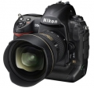

器材库 > 35mm画幅可换镜头数码相机 > D3s

规格总览
产品类型
35mm画幅可换镜头数码相机
发布日期
2009-10-14
影像规格
影像传感器
CMOS
影像传感器尺寸
36.0 x 23.9mm
总像素
1287万
有效像素
1210万
影像处理器
EXPEED
色彩滤镜
RGB原色彩色滤镜
低通滤镜
感应器件前面，不可移动
色彩空间
Adobe RGB、SRGB
最大解像度
4256 x 2832
静态图像尺寸
FX 格式: 4256 x 2832 [L], 3184 x 2120 [M], 2128 x 1416 [S]; 5:4 (30 x 24): 3552 x 2832[L], 2656 x 2120 [M], 1776 x 1416 [S]; DX 格式: 2784 x 1848 [L], 2080 x 1384 [M], 1392 x 920 [S]; 1.2x (30 x 20): 3552 x 2368[L], 2656 x 1776[M], 1776 x 1184[S]
静态图像格式
JPEG, RAW
短片尺寸
1280 x 720 / 24fps, 640 x 424 / 24fps, 320 x 216 / 24fps
镜头和对焦
镜头卡口
Nikon AF
兼容镜头
1)AF Nikkor (包括AF-S、DX、 VR、D/G)；2)D-型MF Nikkor：AF和部分曝光模式无效；3)非D/G型AF、AI-P Nikkor：AF(仅AI-P)、3D彩色矩阵测光和3D多区平衡填充闪光控制无效；5)Non-CPU AI Nikkor：可在[A]和[M]模式下使用矩阵测光、CW测光和点测光。
对焦系统类型
TTL Multi-CAM 3500
对焦点
51个对焦点（包括15个十字型感应器）
对焦模式
1）自动对焦：单次伺服自动对焦（S）；连续伺服自动对焦（C）；根据拍摄对象的状态自动激活预测对焦追踪，2）手动对焦（M）：支持电子测距仪
手动对焦
支持
曝光控制
测光模式
中央重点测光, 多分区评价测光, 点测光
测光范围
矩阵测光或中央重点测光：0-20EV~点测光：2-20EV
曝光模式
P（程序自动曝光）, A（光圈优先自动曝光）, S（快门速度优先自动曝光）, M（手动测光曝光）
快门类型
电子控制，纵走式，焦平面快门
快门速度
1/8,000至30秒 （以1/3、1/2或1 EV为步长调校），B门，闪光同步速度：1/250秒
自动曝光锁
有
自动包围曝光
2至9次曝光，以1/3、1/2、2/3或1 EV为步长调校
ISO感光度
200, 400, 800, 1600, 3200, 6400, 12800, 自动, 可扩展至100-102400
白平衡
日光, 白炽灯, 闪光灯, 色温调节, 阴天, 荧光灯, 阴影, 自动, 预设白平衡
自拍
10秒, 2秒, 5秒, 20秒
连拍
FX格式下每秒9张/秒，DX裁切格式达11张/秒
闪光灯
闪光模式
慢速同步, 减轻/消除红眼
闪光同步模式
前帘同步, 后帘同步
外接闪光灯
SB系列闪光灯
取景器/显示屏
取景器
眼平五棱取景器
取景范围
100%
取景放大倍率
0.7倍
屈光度调节范围
-3.0 ~ +1.0
反光镜
快速瞬回半透明
景深预视
有
LCD类型
低温多晶硅TFT LCD
LCD尺寸
3.0英寸
LCD像素
92.1万
视野率
100%
文件输入/输出
存储卡
CF
数据接口
USB2.0
视频/音频接口
HDMI 输出, Video 输出 (NTSC/PAL)
电源
电池
一块EN-EL4a / EL4锂离子充电电池
续航能力
约4200张
外接电源
EH-6交流电源适配器（另购）
机身规格
颜色
黑色
尺寸
159.5 x 157 x 87.5mm
重量
1240g
其它
支持语言
中文（简体）, 中文（繁体）, 日语, 捷克语, 丹麦语, 荷兰语, 芬兰语, 法语, 德语, 印度尼西亚语, 意大利语, 韩语, 挪威语, 波兰语, 葡萄牙语, 俄语, 西班牙语, 瑞典语, 土耳其语
附件
EN-EL4a锂离子充电电池，快速充电器MH-22，USB线UC-E4，音频 / 视频线EG-D2，相机带 AN-DC5，机身盖BF-1B，配件热靴盖BS-2，接目镜DK-17，电池舱盖BL-4， USB线夹，Software Suite CD-ROM软件套装
软件
Nikon Transfer 、ViewNX
备注
矩阵测光：3D彩色矩阵测光II（G 型和 D 型镜头）；彩色矩阵测光II（其它 CPU 镜头）；彩色矩阵测光（非CPU镜头，用户提供镜头数据）；内置GPS功能
河马和龟龟2015-12-05 16:184.5 分
操作性 4.50功能性 4.50美观性 5.00趣味性 4.50耐用性 5.00性价比 4.50解像力 4.00色彩还原 4.00
liuxbc2015-07-04 22:415 分
操作性 5.00功能性 5.00美观性 5.00趣味性 5.00耐用性 5.00性价比 5.00解像力 5.00色彩还原 5.00
商汤之梦2015-02-27 22:504.94 分
操作性 5.00功能性 5.00美观性 5.00趣味性 5.00耐用性 5.00性价比 5.00解像力 4.50色彩还原 5.00
丛林日记20082015-02-27 11:104.88 分
操作性 5.00功能性 5.00美观性 5.00趣味性 5.00耐用性 5.00性价比 5.00解像力 4.50色彩还原 4.50
runyee2013-11-23 16:064.44 分
操作性 5.00功能性 5.00美观性 5.00趣味性 1.00耐用性 5.00性价比 4.50解像力 5.00色彩还原 5.00
Raceman2013-09-18 16:214.94 分
操作性 5.00功能性 5.00美观性 5.00趣味性 5.00耐用性 5.00性价比 4.50解像力 5.00色彩还原 5.00
采纳者2013-04-11 01:574.75 分
操作性 5.00功能性 5.00美观性 5.00趣味性 5.00耐用性 5.00性价比 3.50解像力 4.50色彩还原 5.00
ttmars2012-12-29 13:404.81 分
操作性 4.50功能性 5.00美观性 5.00趣味性 4.50耐用性 5.00性价比 4.50解像力 5.00色彩还原 5.00
淡然心情2012-11-23 11:044.56 分
操作性 5.00功能性 5.00美观性 4.50趣味性 4.50耐用性 5.00性价比 4.50解像力 4.50色彩还原 3.50
兰青2012-10-17 21:294.81 分
操作性 5.00功能性 5.00美观性 5.00趣味性 5.00耐用性 5.00性价比 4.50解像力 4.50色彩还原 4.50
云里金刚2012-10-05 14:144.81 分
操作性 5.00功能性 4.50美观性 4.50趣味性 5.00耐用性 5.00性价比 4.50解像力 5.00色彩还原 5.00
属猪的猪2012-09-19 16:304.31 分
操作性 4.50功能性 4.50美观性 4.50趣味性 4.00耐用性 5.00性价比 3.00解像力 4.50色彩还原 4.50
阿番2012-07-06 08:324.94 分
操作性 5.00功能性 5.00美观性 5.00趣味性 5.00耐用性 5.00性价比 4.50解像力 5.00色彩还原 5.00
sunxun272012-06-09 08:495 分
操作性 5.00功能性 5.00美观性 5.00趣味性 5.00耐用性 5.00性价比 5.00解像力 5.00色彩还原 5.00
一菩2012-02-17 01:075 分
操作性 5.00功能性 5.00美观性 5.00趣味性 5.00耐用性 5.00性价比 5.00解像力 5.00色彩还原 5.00
梧桐思语2012-01-09 10:104.69 分
操作性 5.00功能性 4.50美观性 4.00趣味性 4.50耐用性 5.00性价比 4.50解像力 5.00色彩还原 5.00
oilpic2011-12-13 14:554.44 分
操作性 5.00功能性 4.50美观性 5.00趣味性 3.50耐用性 5.00性价比 3.00解像力 5.00色彩还原 4.50
饮马流沙河2011-10-16 17:164.56 分
操作性 4.50功能性 5.00美观性 5.00趣味性 4.50耐用性 5.00性价比 3.50解像力 4.50色彩还原 4.50
丛林色兔2011-10-12 15:49
好歌2011-09-23 22:334.81 分
操作性 5.00功能性 5.00美观性 5.00趣味性 5.00耐用性 5.00性价比 4.00解像力 4.50色彩还原 5.00
boyangvision2011-08-16 18:514.88 分
操作性 5.00功能性 5.00美观性 5.00趣味性 4.50耐用性 5.00性价比 4.50解像力 5.00色彩还原 5.00
蔡某人2011-08-10 15:424.88 分
操作性 5.00功能性 5.00美观性 5.00趣味性 4.50耐用性 5.00性价比 4.50解像力 5.00色彩还原 5.00
xiyujk2011-08-02 23:214.75 分
操作性 5.00功能性 5.00美观性 5.00趣味性 4.50耐用性 5.00性价比 4.50解像力 4.50色彩还原 4.50
alandanto2011-07-21 09:464.44 分
操作性 4.50功能性 4.50美观性 5.00趣味性 4.00耐用性 5.00性价比 3.00解像力 4.50色彩还原 5.00
6025162172011-06-05 19:564.63 分
操作性 4.50功能性 5.00美观性 5.00趣味性 4.50耐用性 5.00性价比 3.00解像力 5.00色彩还原 5.00
小352011-05-02 08:324.19 分
操作性 5.00功能性 5.00美观性 3.50趣味性 3.00耐用性 5.00性价比 3.00解像力 5.00色彩还原 4.00
秋哥2011-04-22 10:504.75 分
操作性 5.00功能性 5.00美观性 4.50趣味性 5.00耐用性 4.50性价比 4.00解像力 5.00色彩还原 5.00
老编2011-04-04 04:024.94 分
操作性 5.00功能性 5.00美观性 5.00趣味性 5.00耐用性 5.00性价比 4.50解像力 5.00色彩还原 5.00
li晓青2011-03-19 23:074.94 分
操作性 5.00功能性 5.00美观性 5.00趣味性 5.00耐用性 5.00性价比 4.50解像力 5.00色彩还原 5.00
uncletiger2010-11-02 16:594.88 分
操作性 5.00功能性 5.00美观性 5.00趣味性 4.50耐用性 5.00性价比 4.50解像力 5.00色彩还原 5.00
sttudou2010-08-20 11:135 分
操作性 5.00功能性 5.00美观性 5.00趣味性 5.00耐用性 5.00性价比 5.00解像力 5.00色彩还原 5.00
malcolm2010-06-01 01:51
malcolm2010-05-29 00:42
sttudou2010-04-27 14:03
xwh19822010-04-21 16:104.81 分
操作性 4.50功能性 5.00美观性 5.00趣味性 5.00耐用性 5.00性价比 4.00解像力 5.00色彩还原 5.00
草根无名2010-02-04 12:084.69 分
操作性 4.50功能性 4.50美观性 4.50趣味性 5.00耐用性 5.00性价比 4.00解像力 5.00色彩还原 5.00
Rosicky2010-02-02 12:144.63 分
操作性 5.00功能性 5.00美观性 4.50趣味性 4.50耐用性 5.00性价比 4.00解像力 4.00色彩还原 5.00
若农2009-12-10 23:174.44 分
操作性 4.50功能性 4.50美观性 4.50趣味性 4.50耐用性 5.00性价比 3.50解像力 4.50色彩还原 4.50
farreri612s2009-10-17 16:004.5 分
操作性 4.50功能性 5.00美观性 5.00趣味性 4.50耐用性 5.00性价比 3.00解像力 4.50色彩还原 4.50
李淑昌2009-10-14 20:083.69 分
操作性 4.00功能性 4.00美观性 3.50趣味性 4.50耐用性 5.00性价比 1.00解像力 3.50色彩还原 4.00
若农2009-10-14 18:38
安忍之怀2009-10-14 17:525 分
操作性 5.00功能性 5.00美观性 5.00趣味性 5.00耐用性 5.00性价比 5.00解像力 5.00色彩还原 5.00
产品图 / 样片
D3s
评测 / 相关文章
- 详细内容 （存档）
- 弱光下的尝试，D3s视频样张赏析 （存档）
- ［资讯］尼康数码单反汇总 － 截至2013年5月 （存档）
- ［资讯］尼康公布D3/D3X/D3S/D7000的最新固件 （存档）
- ［资讯］全面解读 尼康D7000视听手册上线 （存档）
- ［行情］尼康D3s机身价格稳定 （存档）
- ［资讯］尼康D3s获Best of What’s New大奖 （存档）
- ［资讯］Aquatica两款防水外壳发布 （存档）
- ［资讯］日本影音家电权威大奖VGP 2011 公布 （存档）
- ［资讯］本年度最新EISA欧洲影像大奖公布 （存档）
- ［资讯］尼康D3S拍摄最新太空照片赏析 （存档）
- ［资讯］美国航空航天局用D3S从太空拍摄的影像 （存档）
相关文章
- ［资讯］尼康数码单反汇总 － 截至2013年5月 （存档）
- ［资讯］尼康公布D3/D3X/D3S/D7000的最新固件 （存档）
- ［资讯］全面解读 尼康D7000视听手册上线 （存档）
- ［行情］尼康D3s机身价格稳定 （存档）
- ［资讯］尼康D3s获Best of What’s New大奖 （存档）
- ［资讯］Aquatica两款防水外壳发布 （存档）
- ［资讯］日本影音家电权威大奖VGP 2011 公布 （存档）
- ［资讯］本年度最新EISA欧洲影像大奖公布 （存档）
- ［资讯］尼康D3S拍摄最新太空照片赏析 （存档）
- ［资讯］美国航空航天局用D3S从太空拍摄的影像 （存档）
- ［资讯］依然没有放弃 尼康发布D3s相机最新固件 （原站已下线）